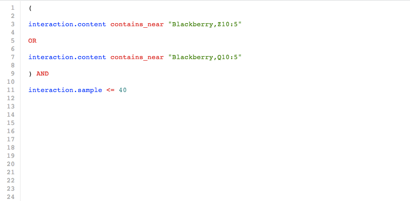

Brand Monitoring Query
Get immediate feedback from your customers: Find out what people tweet positively or negatively about your products, services and locations.
Capitalise on your fans and respond to your critics: Find out who your online evangelists and critics are and their level of social influence to start benefitting from those who are already promoting your brand in a positive light and to manage customer complaints.

Follow Along
View the compiled code in CSDL
